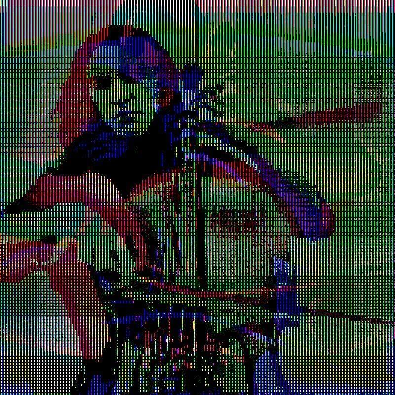

My resume

Summary
Detail oriented programmer and chemist, with 2 years of experience in
Pharmacovigilance with advanced understanding of the Patient Safety Case handling
local and global processes, including regulatory requirements and Medical Writing. Passionate
about bachterial genetics and Web Development. Seekind to add value to my work environment
and contribute on problem solving
Education
BIOLOGICAL PHARMACEUTICAL CHEMISTRY
Bachelor (Universidad Nacional Autónoma de México)
2014-2020
VIOLONCELLO
Bachelor (Escuela Superior de Música)
2008-2020
COURSE: INTRODUCTION TO MEDICAL PROTEOMICS
Instituto de Medicina Genómica
2021
The Complete 2023 Web Development Bootcamp
Angela Yu (Ongoing)
Work experience
RESEARCH INTERNSHIP (Biomedical Research Institute)
2018-2023
- Bibliographic research
- Plasmid DNA extraction from Bacterial Samples
- Horizontal gene transfer techniques
Patient Safety Specialist (Tata Consultancy Services - ASTRAZENECA)
Apr-2021 to Jun-2022
- Performed Quality Review Evaluation for Individual Case Safety Reports
- Data entry of Initial and Follow-up information for Individual Case Safety Reports
- Medical writing for expeditable and non-expeditable ICSR
- Medical coding of Adverse events
Drug Safety Associate (ICON - SANOFI)
Jun-2022 to Present
- Medical writing of concise, accurate and well written narratives for Local ICSR's
- Performing of consistent coding of diseases, adverse events and medications according to project-specific conventions
- Performs Follow-up attempts to request medical and adverse events related information to consumers and health professionals
Skills
- Prioritize, schedule and organize efficiently
- Team work
- Advanced English (Professional working proficiency)
- Active listening